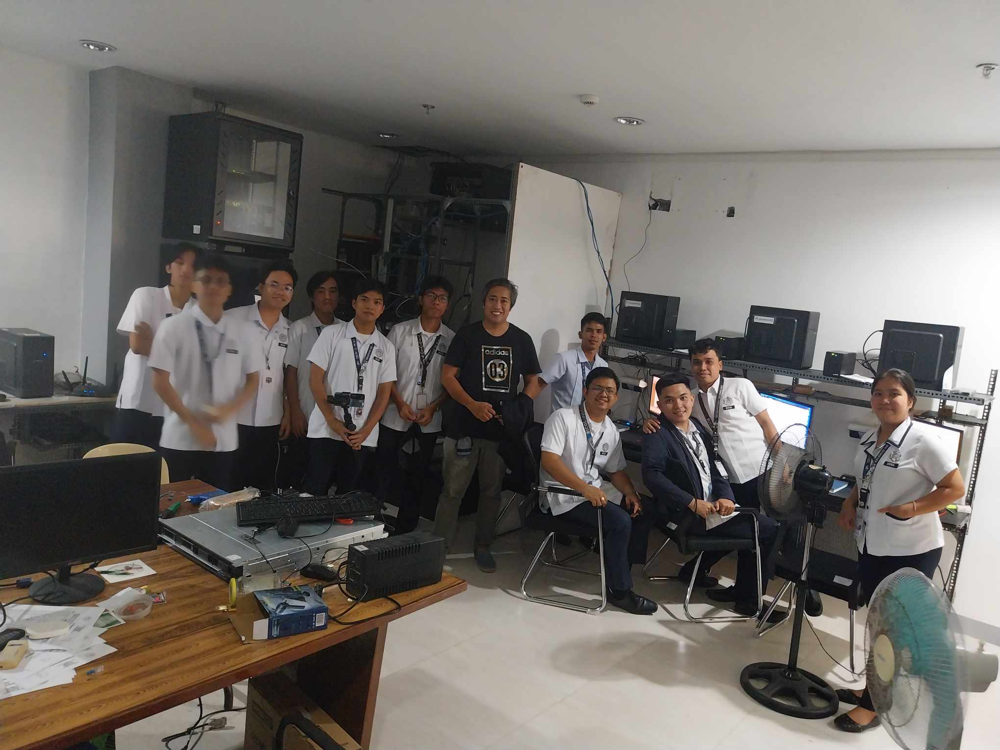
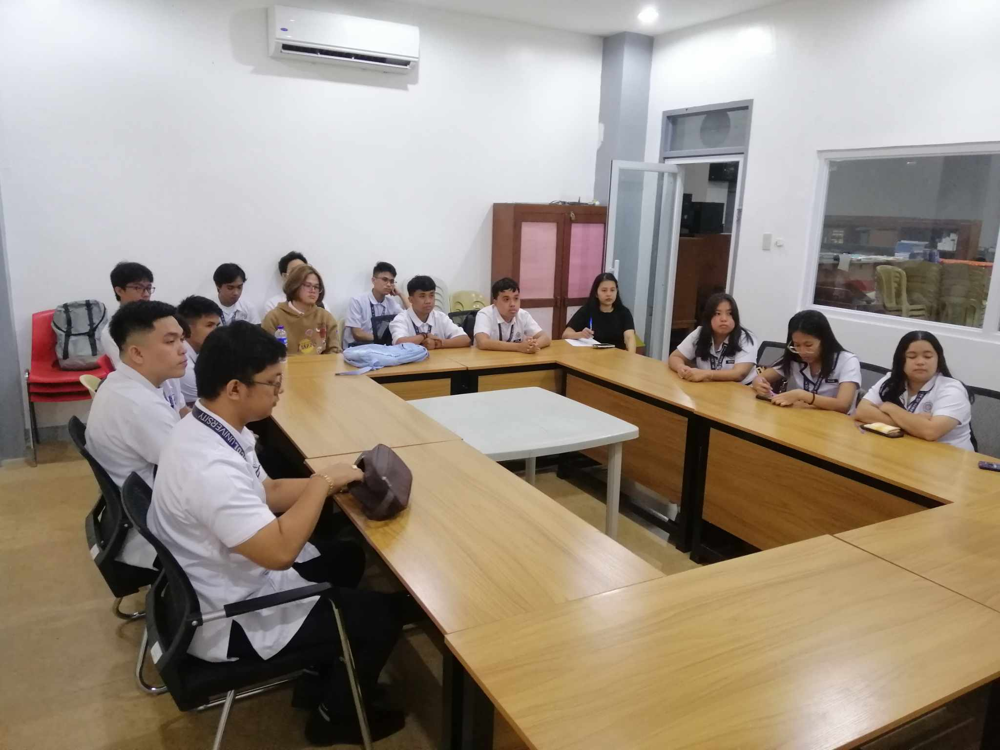
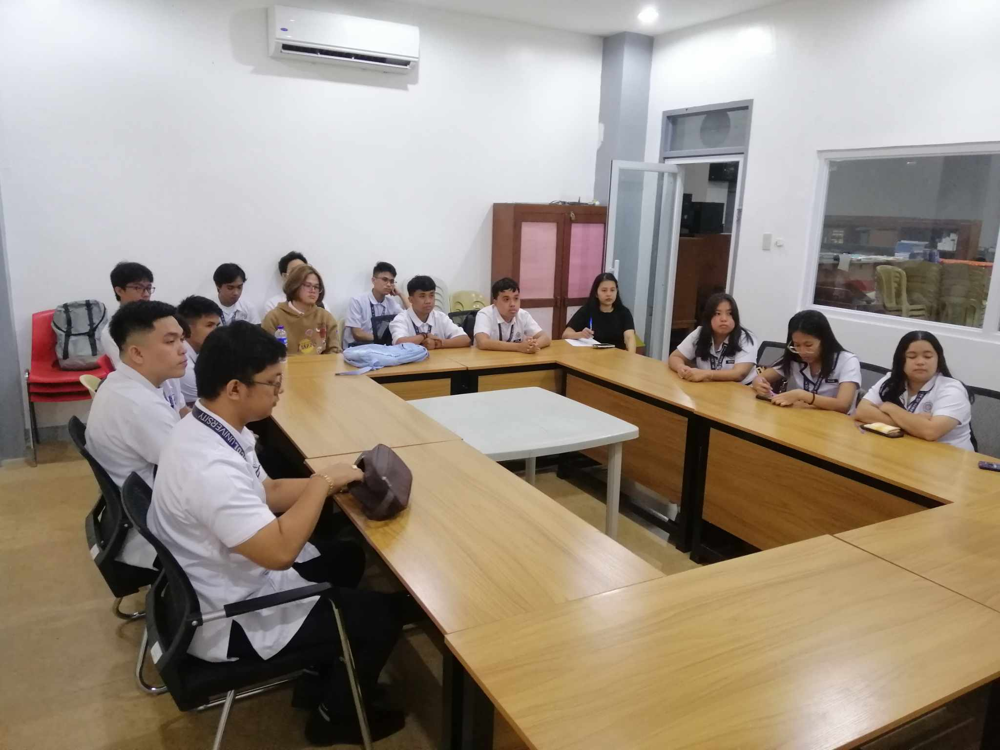
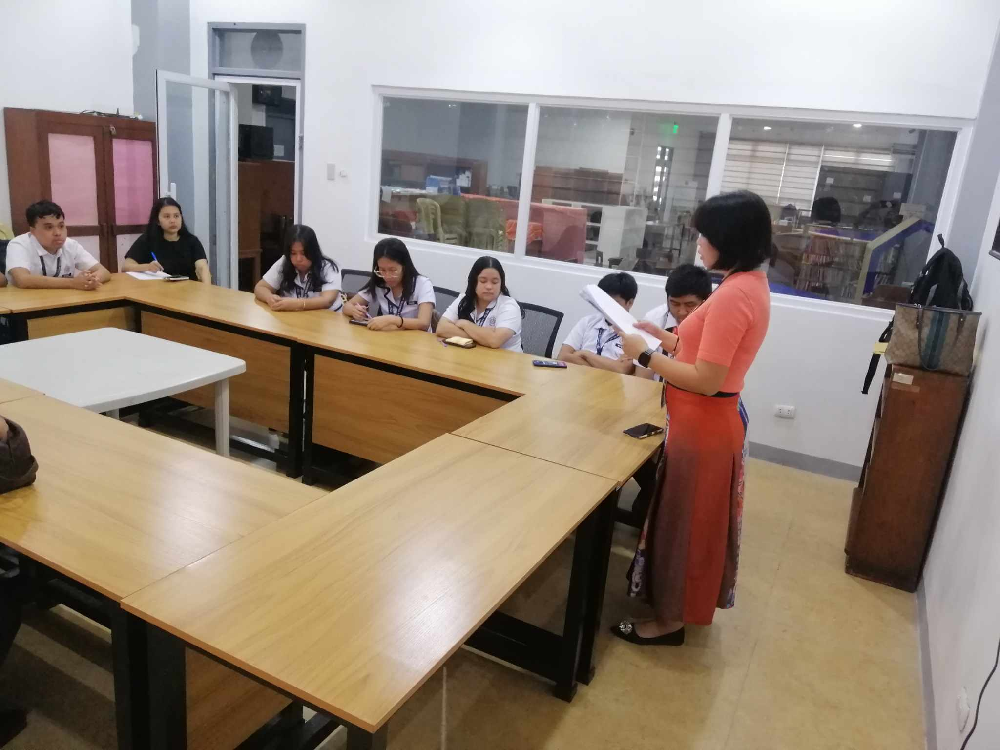
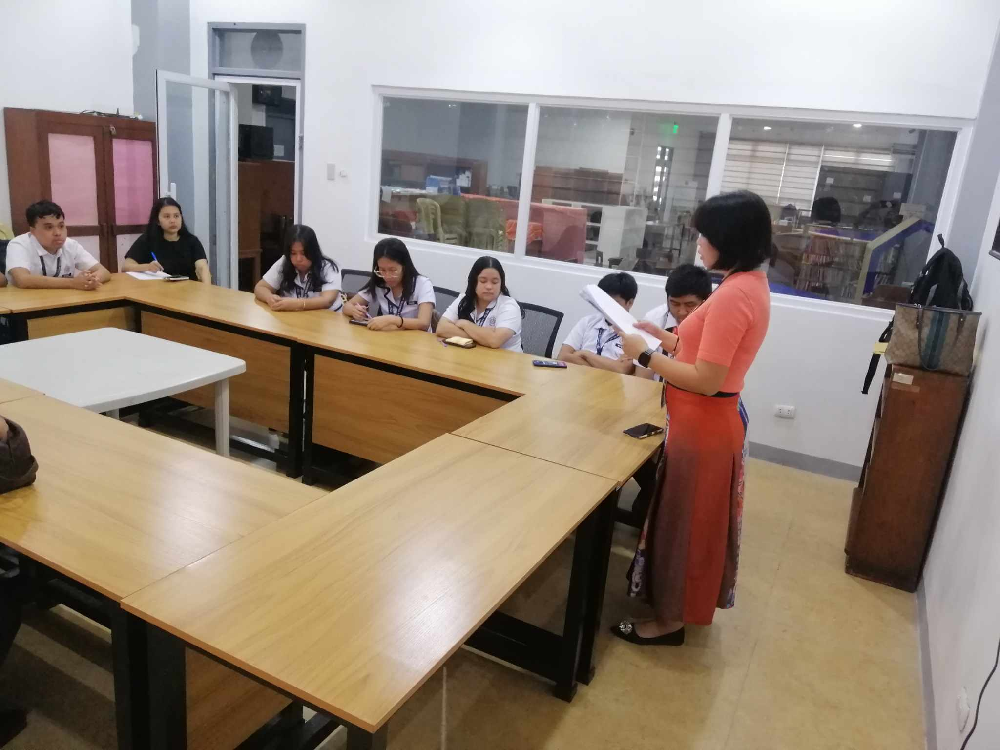
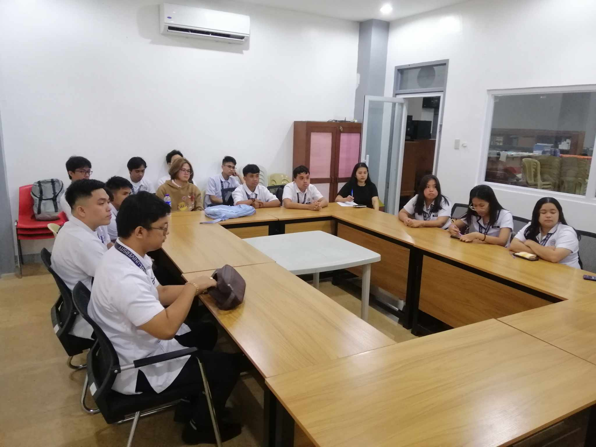
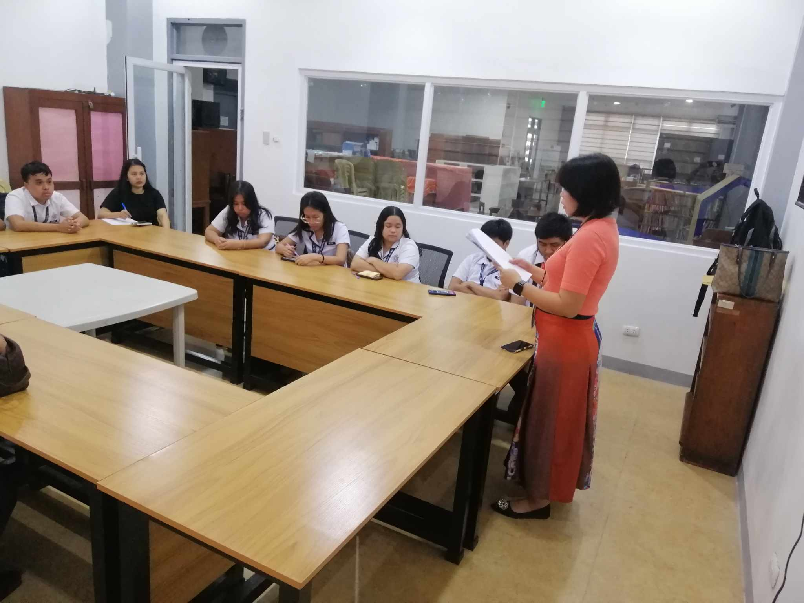

OJT Daily Entry for the Month of February

 


 



On this day February 2, we are been called to attend the Orientation for those who are going to deployed in the University Library, we discuss a lot of things first Ma'am Glenda discuss on what will be their expectations and discuss why we choose to do the OJT here in the University Library, and Ma'am Lai the one who assigned us to what task to do, and Sir Michael is the one who handles us and give task to us. And later that we are given some dry run and what to do and other possible tasks to be given to us throughout our OJT period.
HERE ARE SOME TASK I MADE:
- We practiced to scan some Thesis
- We are been task to fix the computer setup